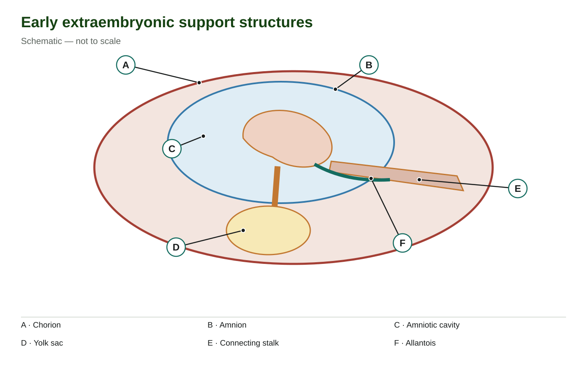
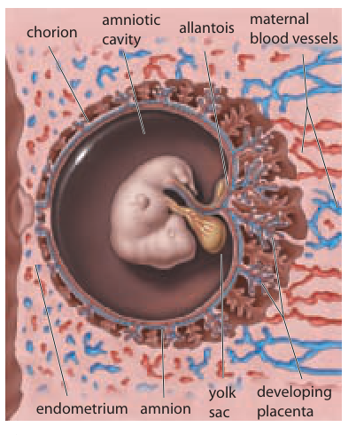

<section class="course-page" hidden="" id="lesson-05"><div class="p2-topic"><header class="page-header"><p class="eyebrow">Learn · Chapter 15</p><h1 data-canvas-edit-key="ch15-l05-title" data-canvas-helper-edit-key="ch15-l05-title">Extraembryonic membranes and support structures</h1><p class="lesson-question">Which structures support development without becoming the embryo’s body?</p><div class="goal-strip"><div><p class="section-label">Learning goal</p><p data-canvas-edit-key="ch15-l05-goal" data-canvas-helper-edit-key="ch15-l05-goal">Distinguish amnion, chorion, yolk sac, allantois and umbilical cord, using their positions and functions.</p></div><div><p class="section-label">Before you begin</p><p data-canvas-edit-key="ch15-l05-prior" data-canvas-helper-edit-key="ch15-l05-prior">The embryo and its supporting tissues develop together. The three embryonic germ layers should not be confused with extraembryonic membranes.</p></div></div><details class="page-guide"><summary><strong>How to complete this lesson</strong> Learn → worked example → practise → lesson check</summary><div class="guide-body"><ol><li>Read the explanation and its diagrams. Open a bold term when you need a definition.</li><li>Follow the worked example, then try both supported questions. Select <strong>Check answer</strong> for feedback.</li><li>Open the required check and select <strong>Start</strong>. Correct both selections to unlock writing.</li><li>Write each explanation and select its <strong>Save written response</strong> button. Editing saved writing makes it a draft again.</li><li>Select <strong>Submit and finish</strong> to complete the check. Find your records in <strong>All My Work</strong>.</li></ol><p><strong>Expected work:</strong> one completed lesson check. Supported practice, videos and textbook questions are optional. Saved writing is not automatically graded.</p></div></details><div class="textbook-band"><div><strong>Optional embedded reading</strong><p>Chapter 15 · printed pp. 513–516</p></div><p><a data-open-pdf="513" href="#textbook-library">Open p. 513</a> · <a data-open-pdf="516" href="#textbook-library">Open p. 516</a></p></div><p class="terms-line lesson-term-strip"><strong>Key terms:</strong> <button aria-haspopup="dialog" class="bio-term" data-term-id="ch15-word-amnion" type="button">amnion</button> · <button aria-haspopup="dialog" class="bio-term" data-term-id="ch15-word-chorion" type="button">chorion</button> · <button aria-haspopup="dialog" class="bio-term" data-term-id="ch15-word-yolk-sac" type="button">yolk sac</button> · <button aria-haspopup="dialog" class="bio-term" data-term-id="ch15-word-allantois" type="button">allantois</button></p><details class="vocab-help lesson-vocabulary-help"><summary>Vocabulary help</summary><section aria-labelledby="lesson-05-anchor-words" class="lesson-words"><p class="section-label">Key terms</p><h2 id="lesson-05-anchor-words">Words for this lesson</h2><p>Use these definitions when you need help with a term.</p><dl><div><dt><button aria-haspopup="dialog" class="bio-term" data-term-id="ch15-word-amnion" type="button">amnion</button></dt><dd>The membrane enclosing the fluid-filled amniotic cavity around the developing embryo or fetus.</dd></div><div><dt><button aria-haspopup="dialog" class="bio-term" data-term-id="ch15-word-chorion" type="button">chorion</button></dt><dd>The outer extraembryonic membrane whose villi contribute to the fetal portion of the placenta.</dd></div><div><dt><button aria-haspopup="dialog" class="bio-term" data-term-id="ch15-word-yolk-sac" type="button">yolk sac</button></dt><dd>An early extraembryonic structure involved in early blood-cell formation and development, without a large food-yolk store in humans.</dd></div><div><dt><button aria-haspopup="dialog" class="bio-term" data-term-id="ch15-word-allantois" type="button">allantois</button></dt><dd>An early extraembryonic outgrowth associated with the connecting stalk and development of the bladder connection.</dd></div></dl></section></details></header><div class="content-section" data-canvas-edit-key="ch15-l05-teaching-01" data-canvas-helper-edit-key="ch15-l05-teaching-01" id="ch15-l05-teaching-01"><h2>Which boundary surrounds which space?</h2><p>An embryo develops together with structures that protect it and help maintain its supply of materials. <em>Extraembryonic</em> means outside the embryo's body. It describes the position of these support structures, not a lack of importance. They are different from the ectoderm, mesoderm and endoderm that name the embryo's primary tissue-forming layers.</p><p data-canvas-edit-key="ch15-l05-teaching-01-p1" data-canvas-helper-edit-key="ch15-l05-teaching-01-p1">Start at the embryo in the centre of the schematic and move outward. The <button aria-haspopup="dialog" class="bio-term" data-term-id="ch15-word-amnion" type="button">amnion</button> is the membrane enclosing the amniotic cavity. The cavity is the space, and amniotic fluid is its contents. Fluid cushions the developing embryo and fetus, allows movement and helps prevent adjacent body surfaces from sticking together. Those functions depend on a fluid-filled environment, not on the membrane being a blood vessel.</p><p data-canvas-edit-key="ch15-l05-teaching-01-p2" data-canvas-helper-edit-key="ch15-l05-teaching-01-p2">Farther outward is the <button aria-haspopup="dialog" class="bio-term" data-term-id="ch15-word-chorion" type="button">chorion</button>. Finger-like projections called chorionic villi extend toward maternal tissue. Villi increase the area of contact at the exchange interface and contribute to the fetal part of the placenta. The placenta also has a maternal contribution from the uterine lining. The chorion is therefore different from both the amnion and the whole placenta.</p><p>Use the leader endpoints to test the distinction. A ends on the outer chorion boundary. B ends on the amnion boundary, whereas C ends inside the amniotic cavity. D identifies a separate yolk sac below the embryo. The simplified shapes show relationships, not measured sizes or every tissue layer. In particular, the yolk sac is outside the amniotic cavity even though it remains associated with the embryo.</p><figure class="science-figure" data-figure-id="ch15-support"><div class="figure-toolbar"><strong>Early extraembryonic support structures</strong><button class="text-link" data-enlarge-figure="ch15-support" type="button">View larger</button></div><figcaption>The amnion surrounds the embryo and amniotic cavity; the chorion lies outside it. The yolk sac is separate from the amniotic cavity, and the connecting stalk links toward the outer tissues. Schematic — not to scale.</figcaption></figure></div><div class="content-section" data-canvas-edit-key="ch15-l05-teaching-02" data-canvas-helper-edit-key="ch15-l05-teaching-02" id="ch15-l05-teaching-02"><h2>Early support is more than a food store</h2><p data-canvas-edit-key="ch15-l05-teaching-02-p1" data-canvas-helper-edit-key="ch15-l05-teaching-02-p1">The human <button aria-haspopup="dialog" class="bio-term" data-term-id="ch15-word-yolk-sac" type="button">yolk sac</button> is a small early support structure. Its name can suggest the large yolk reserve in a bird egg, but humans do not begin with a comparable bag of stored food lasting until birth. The yolk sac has important early roles, including blood-cell formation and nutritional and metabolic support. As organs develop, structures such as the liver and later bone marrow take over major blood-forming roles.</p><p>The statement on textbook p. 516 that the human yolk sac has “no nutritive function” is too strong. <strong>No large yolk store does not mean no role in nutrition.</strong> Helping process or transfer nutrients early in development is different from carrying a large reserve of food for the entire pregnancy. Later, the placenta becomes the major exchange interface supporting the growing fetus.</p><p data-canvas-edit-key="ch15-l05-teaching-02-p2" data-canvas-helper-edit-key="ch15-l05-teaching-02-p2">The <button aria-haspopup="dialog" class="bio-term" data-term-id="ch15-word-allantois" type="button">allantois</button> is a small outgrowth associated with the connecting stalk. It is involved in development of the connection between the bladder region and the umbilical region. Use that limited description for humans: it is not a large waste-storage sac like the allantois in some egg-laying animals, and it does not become the entire umbilical cord or the whole bladder by itself.</p><p data-canvas-edit-key="ch15-l05-teaching-02-p3" data-canvas-helper-edit-key="ch15-l05-teaching-02-p3">Return to E and F in the schematic. E identifies the connecting stalk, the connection toward the outer tissues. F identifies the smaller allantoic structure associated with it. One is not simply another name for the other. During development, the connecting region and associated vessels become organized into the umbilical cord.</p><p>Now compare the original textbook picture below with the simpler schematic. Locate the embryo inside the amniotic cavity, then follow the labels to amnion and the outer chorion. Find the small yolk sac beside the embryo rather than inside the surrounding amniotic space. On the right, the developing placenta lies near maternal blood vessels. Different colours and drawing styles do not change the structures' names or relationships.</p><figure class="science-figure" data-figure-id="ch15-source-membranes"><div class="figure-toolbar"><strong>Membranes around the developing embryo</strong><button class="text-link" data-enlarge-figure="ch15-source-membranes" type="button">View larger</button></div><figcaption>Locate the amnion, amniotic cavity, chorion, yolk sac and connecting stalk. The yolk sac is outside the amniotic cavity. Inquiry into Biology, Chapter 15, p. 516.</figcaption></figure><p>The textbook crop does not separately label the connecting stalk. Use E in the schematic above for that structure; the textbook image instead labels the allantois.</p></div><div class="content-section" data-canvas-edit-key="ch15-l05-teaching-03" data-canvas-helper-edit-key="ch15-l05-teaching-03" id="ch15-l05-teaching-03"><h2>Protection, exchange and transport are different jobs</h2><p>The placenta is an exchange interface between maternal and fetal systems. Oxygen and nutrients move toward fetal blood across placental tissues; carbon dioxide and other wastes move toward maternal blood for removal. Maternal and fetal blood normally remain in separate circulations. Exchange of substances does not require a direct flow of maternal blood into fetal vessels.</p><p>The umbilical cord provides the fetal transport connection to that interface. Fetal blood travels from the fetus to the placenta and returns to the fetus through vessels in the cord. A usual cord has two umbilical arteries carrying blood away from the fetus and one umbilical vein returning blood toward it. Here, the returning blood is oxygen-rich relative to the blood arriving at the placenta. Artery and vein name direction relative to the heart, not a guaranteed oxygen content.</p><p data-canvas-edit-key="ch15-l05-teaching-03-p2" data-canvas-helper-edit-key="ch15-l05-teaching-03-p2">Compare that pathway with the amniotic environment. The amnion and its fluid help provide physical protection and room for movement. They do not replace placental gas exchange or pump maternal blood into the fetal heart. The cord carries fetal blood; the placenta is where exchange occurs. Keeping each structure's job separate explains why one structure cannot substitute for all the others.</p><p data-canvas-edit-key="ch15-l05-teaching-03-p1" data-canvas-helper-edit-key="ch15-l05-teaching-03-p1">When reading a diagram, first decide whether the leader points to a membrane, a space, a small developmental structure or a transport connection. Then connect its location with its function. A label inside the amniotic cavity needs a different name from a label on the membrane surrounding it, even if the endpoints are close.</p><p>Some optional textbook questions in this filter concern later organ development or earlier hCG support. Use the matching lesson when answering those. The support structures discussed here develop alongside the embryo's organs; the next lesson follows how those organs begin to take shape.</p></div><div class="worked-example" data-canvas-edit-key="ch15-l05-worked" data-canvas-helper-edit-key="ch15-l05-worked" id="ch15-l05-worked"><p class="section-label">Worked example</p><h3>Correct a label by checking its endpoint and job</h3><p>In the first schematic, a learner writes “amnion” beside C and “amniotic cavity” beside B. The learner also says that E carries maternal blood straight into the embryo. Check the record against the actual leader lines and the taught functions.</p><ol><li><strong>Inspect B.</strong> Its endpoint lies on the blue boundary enclosing the embryo. That boundary is the amnion, a membrane.</li><li><strong>Inspect C.</strong> Its endpoint lies within the blue region rather than on its boundary. It identifies the amniotic cavity, the space that contains fluid. Swap the two labels because their endpoints indicate different kinds of structure.</li><li><strong>Identify E at this stage.</strong> E is the connecting stalk, not a completed adult-like transport system. The connecting region contributes to the developing umbilical cord.</li><li><strong>Check the blood claim.</strong> The later cord carries fetal blood to and from the placenta. Maternal blood remains in the maternal circulation while substances cross the placental exchange interface. The record's direct maternal-blood flow is not the taught pathway.</li></ol><p>A correct label therefore needs more than a nearby familiar word. It must match the endpoint, developmental stage and function. The diagram is a simplified arrangement; it does not by itself show blood flow, so the final correction uses the explanation as well as the picture.</p></div><section class="content-section guided-practice" data-canvas-edit-key="ch15-l05-guided" data-canvas-helper-edit-key="ch15-l05-guided" id="ch15-l05-guided"><h2>Practise with support</h2><h3>Apply the explanation</h3><p>Try both questions. Use the hint to revise your thinking after an incorrect answer.</p><div class="practice-question" data-guided-item="ch15-l05-guided-q1"><label for="ch15-l05-guided-q1">A pointer ends on the membrane enclosing the fluid around the fetus. What is labelled?</label><select id="ch15-l05-guided-q1"><option value="">Choose an answer</option><option value="Chorionic villus">Chorionic villus</option><option value="Yolk sac">Yolk sac</option><option value="Amnion">Amnion</option></select><div class="actions"><button data-guided-check="" type="button">Check answer</button></div><p aria-live="polite" data-revision-feedback="" role="status"></p></div><div class="practice-question" data-guided-item="ch15-l05-guided-q2"><label for="ch15-l05-guided-q2">Which structure has finger-like villi contributing to placental exchange?</label><select id="ch15-l05-guided-q2"><option value="">Choose an answer</option><option value="Chorion">Chorion</option><option value="Amniotic fluid">Amniotic fluid</option><option value="Embryonic spinal cord">Embryonic spinal cord</option></select><div class="actions"><button data-guided-check="" type="button">Check answer</button></div><p aria-live="polite" data-revision-feedback="" role="status"></p></div></section><div class="stop-check"><p class="section-label">Stop and think</p><h2>Try this before opening the explanation</h2><p>Are the extraembryonic membranes the same as ectoderm, mesoderm and endoderm?</p><details><summary>Show the explanation</summary><p>No. One set names supporting membranes; the other names the embryo’s primary tissue-forming layers.</p></details></div><details class="activity-disclosure"><summary>Open required check · Extraembryonic membranes and support structures</summary><section class="activity" data-check-id="ch15-check-05" data-required-check=""><h2>Explain what you have learned</h2><p class="required-note">This check counts toward chapter progress. Correct the 2 selections to unlock 2 written explanations. Saving writing records your response; it does not grade its accuracy.</p><div class="run-head"><div class="actions"><button data-start-check="" type="button">Start</button><button data-redo-check="" hidden="" type="button">Redo this check</button></div><span class="timer" data-check-timer="">Not started</span></div><p aria-live="polite" class="run-status" data-check-status=""></p><fieldset data-check-body="" disabled=""><legend class="sr-only">Required chapter check</legend><div class="check-question" data-check-question="ch15-l05-check-mc-1"><p class="eyebrow">Selection 1</p><h3 data-canvas-edit-key="ch15-l05-check-mc-1-prompt" data-canvas-helper-edit-key="ch15-l05-check-mc-1-prompt" id="ch15-l05-check-mc-1-prompt">Which statement correctly describes the human yolk sac?</h3><fieldset aria-labelledby="ch15-l05-check-mc-1-prompt"><label class="choice-row"><input data-check-choice="ch15-l05-check-mc-1" name="ch15-l05-check-mc-1" type="radio" value="It has early developmental roles, including blood-cell formation"/><span>It has early developmental roles, including blood-cell formation</span></label><label class="choice-row"><input data-check-choice="ch15-l05-check-mc-1" name="ch15-l05-check-mc-1" type="radio" value="It is the main store of food for the entire pregnancy"/><span>It is the main store of food for the entire pregnancy</span></label><label class="choice-row"><input data-check-choice="ch15-l05-check-mc-1" name="ch15-l05-check-mc-1" type="radio" value="It is the fetal urinary bladder after birth"/><span>It is the fetal urinary bladder after birth</span></label><label class="choice-row"><input data-check-choice="ch15-l05-check-mc-1" name="ch15-l05-check-mc-1" type="radio" value="It is another name for maternal blood"/><span>It is another name for maternal blood</span></label></fieldset><button data-check-answer="ch15-l05-check-mc-1" type="button">Check answer</button><p aria-live="polite" class="inline-feedback" data-feedback=""></p></div><div class="check-question" data-check-question="ch15-l05-check-mc-2"><p class="eyebrow">Selection 2</p><h3 data-canvas-edit-key="ch15-l05-check-mc-2-prompt" data-canvas-helper-edit-key="ch15-l05-check-mc-2-prompt" id="ch15-l05-check-mc-2-prompt">Which relationship is correct?</h3><fieldset aria-labelledby="ch15-l05-check-mc-2-prompt"><label class="choice-row"><input data-check-choice="ch15-l05-check-mc-2" name="ch15-l05-check-mc-2" type="radio" value="The chorion is identical to the amniotic fluid"/><span>The chorion is identical to the amniotic fluid</span></label><label class="choice-row"><input data-check-choice="ch15-l05-check-mc-2" name="ch15-l05-check-mc-2" type="radio" value="Fetal blood travels through the umbilical cord to and from the placenta"/><span>Fetal blood travels through the umbilical cord to and from the placenta</span></label><label class="choice-row"><input data-check-choice="ch15-l05-check-mc-2" name="ch15-l05-check-mc-2" type="radio" value="The allantois is the adult ovary"/><span>The allantois is the adult ovary</span></label><label class="choice-row"><input data-check-choice="ch15-l05-check-mc-2" name="ch15-l05-check-mc-2" type="radio" value="The amnion pumps maternal blood directly into the fetal heart"/><span>The amnion pumps maternal blood directly into the fetal heart</span></label></fieldset><button data-check-answer="ch15-l05-check-mc-2" type="button">Check answer</button><p aria-live="polite" class="inline-feedback" data-feedback=""></p></div><p class="unlock-message" data-unlock-message="">Answer the selections correctly to unlock the writing.</p><fieldset data-writing-gate="" disabled=""><legend class="sr-only">Written explanations</legend><div class="writing-question" data-writing-question="ch15-l05-check-writing-1"><p class="eyebrow">Written explanation 1</p><label data-canvas-edit-key="ch15-l05-check-writing-1-prompt" data-canvas-helper-edit-key="ch15-l05-check-writing-1-prompt" for="ch15-l05-check-writing-1">Compare the amnion and chorion using their positions and functions.</label><textarea aria-describedby="ch15-l05-check-writing-1-status" data-check-writing="ch15-l05-check-writing-1" data-limit="3200" id="ch15-l05-check-writing-1" rows="6"></textarea><p class="writing-status">Maximum 3200 characters. Explain the biology in your own words.</p><button data-save-writing="ch15-l05-check-writing-1" type="button">Save written response</button><p aria-live="polite" class="writing-status" data-writing-status="" id="ch15-l05-check-writing-1-status"></p><details data-locked="true"><summary>Compare after saving your own response</summary><p>The amnion encloses the fluid-filled cavity around the embryo or fetus and helps provide physical protection. The chorion is an outer extraembryonic membrane; its villi contribute to the fetal portion of the placenta and provide a large exchange interface.</p><div class="answer-criteria"><strong>Check your explanation for:</strong><ul><li>Identifies the relevant structures or quantities.</li><li>Explains the causal relationship or calculation, not just the final result.</li><li>Uses the stated evidence and avoids a stronger conclusion than it supports.</li></ul></div></details></div><div class="writing-question" data-writing-question="ch15-l05-check-writing-2"><p class="eyebrow">Written explanation 2</p><label data-canvas-edit-key="ch15-l05-check-writing-2-prompt" data-canvas-helper-edit-key="ch15-l05-check-writing-2-prompt" for="ch15-l05-check-writing-2">Explain why “the human yolk sac is a bag of food that lasts until birth” is not an adequate description.</label><textarea aria-describedby="ch15-l05-check-writing-2-status" data-check-writing="ch15-l05-check-writing-2" data-limit="3200" id="ch15-l05-check-writing-2" rows="6"></textarea><p class="writing-status">Maximum 3200 characters. Explain the biology in your own words.</p><button data-save-writing="ch15-l05-check-writing-2" type="button">Save written response</button><p aria-live="polite" class="writing-status" data-writing-status="" id="ch15-l05-check-writing-2-status"></p><details data-locked="true"><summary>Compare after saving your own response</summary><p>Unlike the yolk-rich egg of many other animals, a human yolk sac is not a large long-term nutrient store. It has early developmental roles including early blood-cell formation. The placenta becomes the major exchange interface supporting later development.</p><div class="answer-criteria"><strong>Check your explanation for:</strong><ul><li>Identifies the relevant structures or quantities.</li><li>Explains the causal relationship or calculation, not just the final result.</li><li>Uses the stated evidence and avoids a stronger conclusion than it supports.</li></ul></div></details></div></fieldset><div class="actions"><button data-finish-check="" type="button">Submit and finish</button></div></fieldset></section></details><nav aria-label="Previous and next topics" class="lesson-footer"><a href="#lesson-04">← Gastrulation and the three germ layers</a><a class="next" href="#lesson-06">Next: Organogenesis and neurulation →</a></nav><div class="content-section textbook-practice-lesson-link"><a data-textbook-topic="lesson-05" href="#textbook-practice">Optional textbook practice for Extraembryonic membranes and support structures</a></div></div></section>